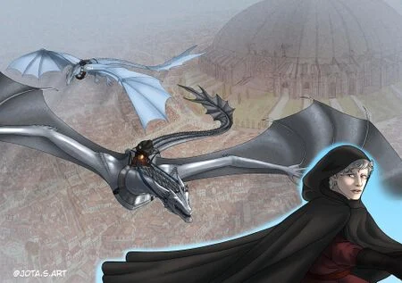
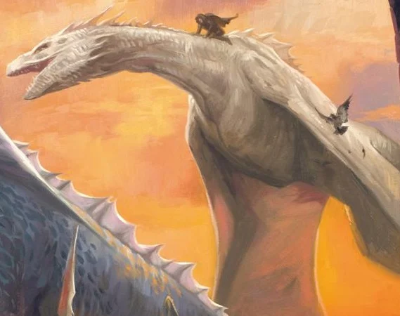

Quicksilver foi uma dragão fêmea da segunda geração Targaryen, famosa por suas escamas de um prateado pálido
brilhante e por suas asas brancas como nuvens.
Chocada em Pedra do Dragão, ela se destacava por sua agilidade impressionante no ar e por cuspir um sopro de
fogo de cor branca e incrivelmente quente.
Ela serviu inicialmente como a montaria do Rei Aenys I Targaryen e, após a morte dele, foi reivindicada por seu
jovem filho e herdeiro legítimo, Aegon, o Sem-Coroa.
O destino de Quicksilver foi selado em uma das batalhas mais trágicas de Westeros, quando tentou defender Aegon
enfrentando o colossal Balerion, montado pelo usurpador Maegor, o Cruel.
Mesmo lutando com bravura e velocidade, a jovem dragão não foi páreo para o tamanho massivo do Terror Negro,
tendo sua asa arrancada e despencando para a morte na histórica Batalha Sob o Olho de Deus.



Dragão Anterior Próximo Dragão Voltar ao Menu